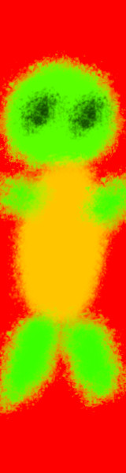

ŻÓŁWIE
Żółwie
(nazwa systematyczna nieustalona, zobacz Nomenklatura) – rząd owodniowców z gromady zauropsydów (Sauropsida) lub według linneuszowskiej klasyfikacji rząd z gromady gadów (Reptilia). Rząd żółwi dzieli się na 2 podrzędy, 14 rodzin i obejmuje 356 gatunków oraz 122 podgatunki żyjące w czasach nowożytnych, tj. od 1500 roku n.e. W tym czasie wyginęło 7 gatunków oraz 3 podgatunki.
Charakteryzują się obecnością pancerza chroniącego cały tułów. Wśród żółwi spotyka się gatunki zarówno mięsożerne, jak i roślinożerne, wodne i lądowe. Wszystkie są jajorodne. Zapłodnienie wewnętrzne odbywa się za pomocą narządu kopulacyjnego. Żółwie, pomimo tego iż są mniej zróżnicowane morfologicznie od innych gadów, potrafiły opanować najróżnorodniejsze środowiska poczynając od mórz, a na terenach pustynnych kończąc.
